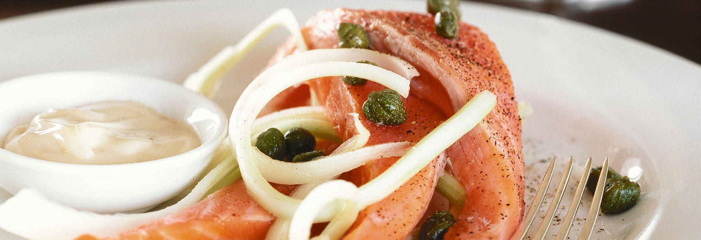
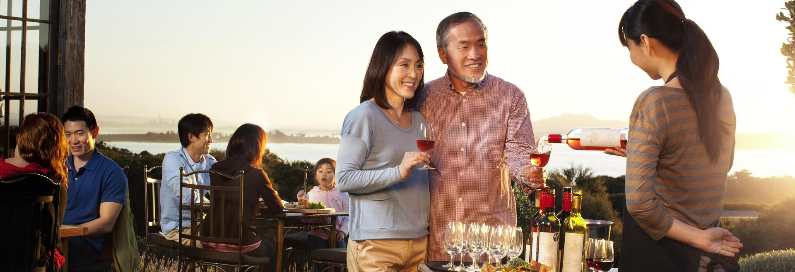
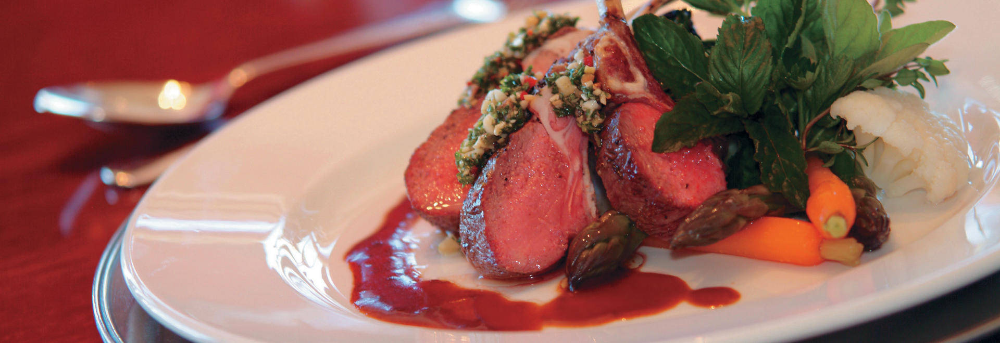
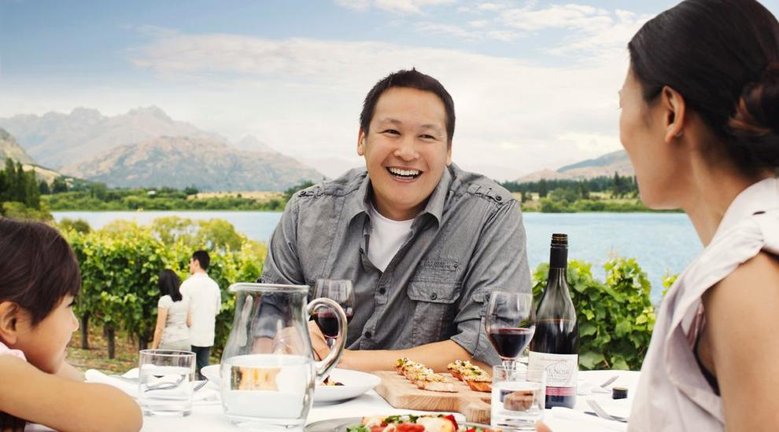
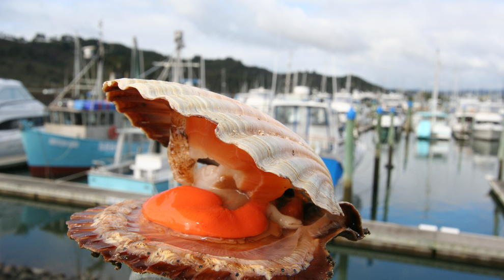
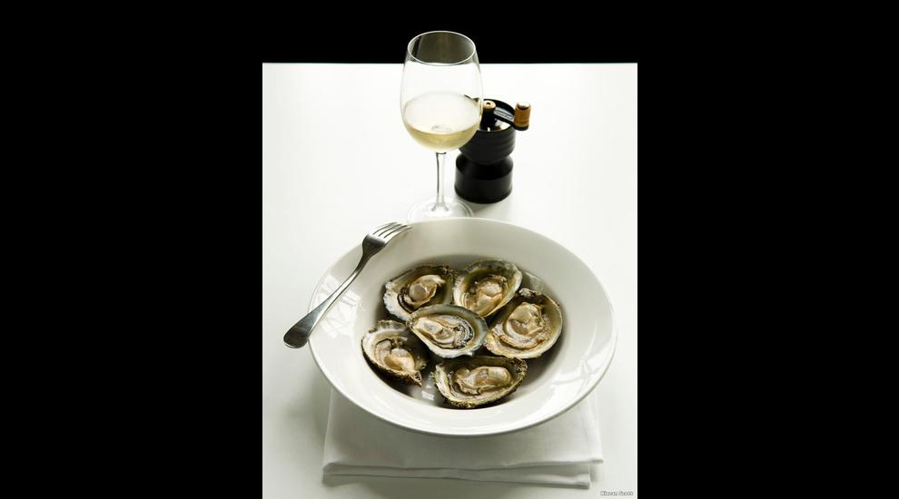
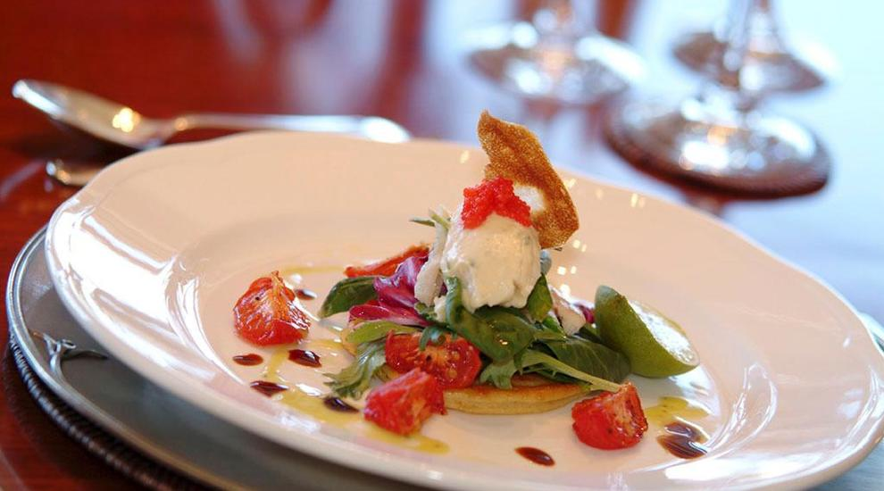
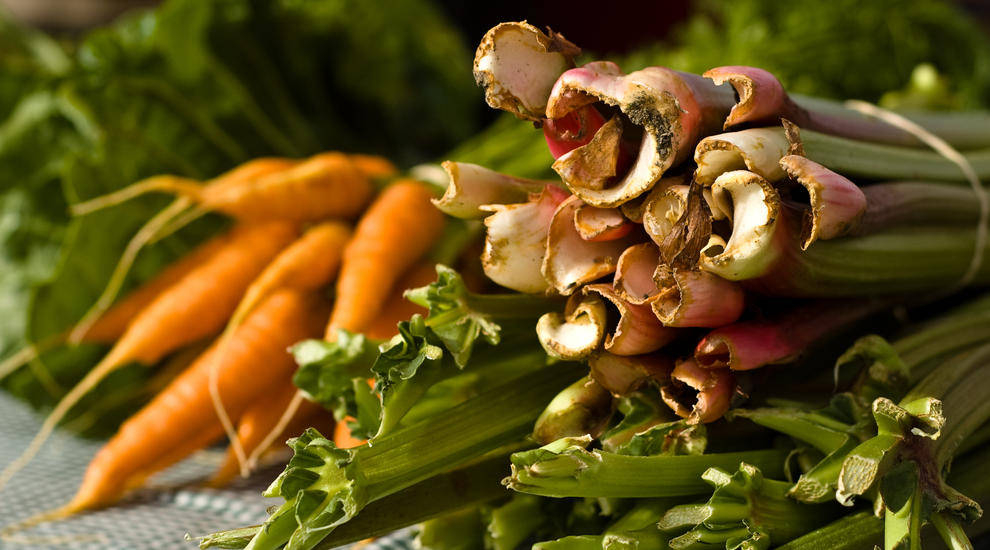

New Zealand
新西兰





对于许多游客而言，享受当地的美酒佳肴绝对是旅行计划的”必选“项目。如果美味的佳肴与醇香的美酒是你行程中的重点，那么新西兰一定不会让你失望。


新西兰作为美食佳酿爱好者的天堂，拥有大片的葡萄园分布四处、手艺精湛的大厨烹制着颇具地方风味的特色菜肴，还有众多美食节，在本土音乐的伴奏下为游客呈上味觉盛宴
世界级葡萄酒
霍克斯湾（Hawkes Bay）、马丁堡（Martinborough）和马尔堡（Marlborough）是新西兰名列前茅的葡萄酒产区，踏上新西兰经典葡萄酒之旅，游遍这些地区120 多座酒庄。如果要彻底游遍各地葡萄酒产地，那就还应前往西奥克兰（West Auckland）、吉斯本（Gisborne）、坎特伯雷（Canterbury）和中奥塔哥（Central Otago）。
大多酒庄都开放品酒，并且酒庄都设有高级餐厅。此外也有单车骑游和豪华巴士游的葡萄酒观光路线，都是尝尽地方美味的绝佳方式。我们闻名世界的葡萄酒有白苏维浓、霞多丽、黑比诺和波尔多（霞多丽/梅乐调和型），期待着你前来品鉴！
喜欢啤酒？